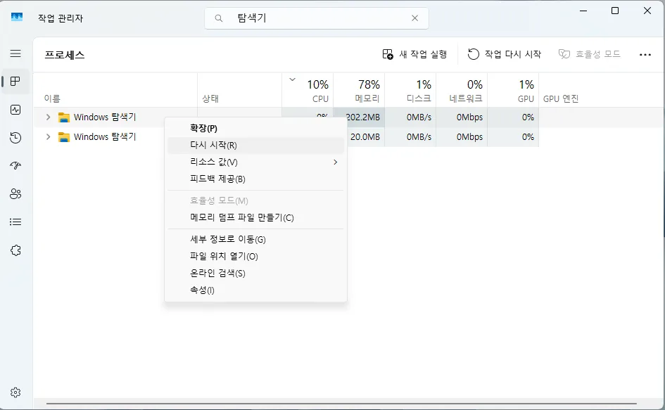
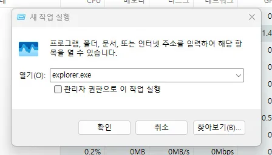

화면
로그인 후 검은 화면 원인과 점검 순서
로그인은 되지만 바탕화면 대신 검은 화면이나 마우스 포인터만 보이는 경우
이 증상은 질문에 답하며 해볼 것을 한 단계씩 따라 할 수 있습니다. 준비물과 자세한 방법을 보여 주고, 직접 하기 어려우면 문의로 이어집니다. 화면 문제 자가진단 시작하기 →
로그인 후 검은 화면은 윈도우가 완전히 부팅되지 않은 상태와 구분해야 합니다. 마우스 포인터가 움직이거나 Ctrl+Alt+Delete 화면이 열린다면 시스템 자체는 작동하고 있지만, 바탕화면을 담당하는 Windows 탐색기나 그래픽 출력 경로가 정상적으로 이어지지 않았을 가능성이 큽니다.
업데이트 직후, 그래픽 드라이버 교체 후, 외부 모니터를 사용한 뒤에 특히 잘 나타납니다. 화면이 검다고 곧바로 저장장치 고장이나 윈도우 재설치를 결정하기보다, 키 입력 반응과 작업 관리자 실행 여부로 소프트웨어 문제인지 먼저 나누는 것이 안전합니다.
Microsoft가 안내하는 그래픽 드라이버 재설정, 화면 출력 모드 확인, 탐색기 재시작 순서에 맞춰 확인하면 데이터에 손대지 않고도 원인을 좁힐 수 있습니다. 각 단계 후 화면이 돌아오는지 확인하고 한 번에 여러 설정을 바꾸지 마세요.
이 가이드가 필요한 상황
- 로그인 소리는 들리지만 바탕화면과 작업표시줄이 보이지 않는다.
- 검은 화면 위에서 마우스 포인터만 움직인다.
- 외부 모니터를 연결하거나 업데이트한 뒤부터 시작됐다.
먼저 확인할 항목
- 화면과 키 입력 반응 구분 — Ctrl+Alt+Delete가 열리면 모니터 신호 단절보다 탐색기나 드라이버 문제일 가능성이 높습니다. Ctrl+Alt+Delete를 눌러 보안 화면이 열리는지 확인하고, 반응이 없으면 케이블과 모니터 입력 소스를 먼저 점검하세요.
- 그래픽 드라이버 즉시 재설정 — 절전 복귀나 업데이트 과정에서 그래픽 드라이버만 멈춘 경우 화면 출력이 다시 살아날 수 있습니다. Windows+Ctrl+Shift+B를 한 번 누릅니다. 짧은 알림음이나 화면 깜빡임이 나타난 뒤 10초 정도 기다리세요.
- Windows 탐색기 다시 실행 — explorer.exe가 시작되지 않으면 로그인은 끝나도 바탕화면, 아이콘, 작업표시줄이 나타나지 않습니다. Ctrl+Shift+Esc로 작업 관리자를 열고 새 작업 실행에서 explorer.exe를 입력합니다. 이미 실행 중이면 Windows 탐색기를 다시 시작하세요.
목록에 "Windows 탐색기"가 있다면 우클릭해 "다시 시작"을 누릅니다(찾기 어려우면 위쪽 검색창에 "탐색기"를 입력). 다시 시작하는 동안 작업표시줄이 잠깐 사라졌다가 돌아옵니다. 아래는 우클릭 메뉴가 열린 화면입니다.

목록에 "Windows 탐색기"가 없다면 작업 관리자 위쪽의 "새 작업 실행"을 누르고 열기 칸에 explorer.exe를 입력한 뒤 확인을 누르세요. 아래는 입력만 해 둔 화면입니다(이 캡처에서는 확인을 누르지 않았습니다).
- 출력 모드와 외부 화면 분리 — 윈도우가 보이지 않는 두 번째 모니터로 화면을 보내고 있을 수 있습니다. 외부 모니터와 도킹 장치를 빼고 Windows+P를 눌러 PC 화면만 모드로 전환해 봅니다. 케이블도 다른 포트로 교차 확인하세요.
원인을 더 정확히 나누는 방법
안전 모드에서는 정상일 때
안전 모드에서 바탕화면이 정상이라면 그래픽 드라이버, 시작 프로그램, 셸 확장 영향이 큽니다. 최근 그래픽 드라이버를 업데이트했다면 장치 관리자에서 이전 드라이버로 되돌리거나 PC 제조사가 제공한 안정 버전을 설치하는 편이 좋습니다.
검은 화면과 부팅 실패의 차이
제조사 로고부터 아무것도 보이지 않으면 이 가이드보다 화면 미출력 가이드가 맞습니다. 로그인 화면은 보였고 로그인 이후에만 검어졌다면 윈도우 셸과 사용자 환경을 먼저 확인해야 합니다.
내 계정에서만 검고 다른 계정은 정상일 때
안전 모드나 다른 사용자 계정으로 로그인하면 바탕화면이 정상인데 평소 쓰는 계정에서만 검다면, 그래픽 드라이버보다 그 계정의 사용자 프로필(C:\Users 아래 폴더와 NTUSER.DAT 레지스트리 파일) 손상이나 사용자별 시작 프로그램을 먼저 의심하는 편이 맞습니다. 다른 계정도 똑같이 검다면 반대로 시스템 전체의 그래픽 드라이버나 출력 경로 문제입니다. 계정을 새로 만들 때는 기존 폴더를 지우지 말고, 기존 프로필의 문서·바탕화면 폴더를 먼저 다른 드라이브로 복사해 두세요.
확인 결과에 따른 다음 단계
- 탐색기 실행으로 복구될 때 — 하드웨어 교체보다 시작 프로그램과 손상된 셸 확장을 정리하고 시스템 파일 검사를 진행하세요. 다음 로그인에서도 반복되는지 확인해야 합니다.
- 화면 깜빡임과 블루스크린이 동반될 때 — 그래픽 드라이버와 GPU 안정성을 함께 점검하세요. 0x00000116이나 0x000000EA가 기록되면 그래픽 장치 관련 상세 페이지를 우선 확인합니다.
피해야 할 실수
- 화면이 검다는 이유만으로 바로 윈도우를 초기화하는 것
- 외부 모니터와 도킹 장치를 연결한 채 원인을 판단하는 것
- 드라이버를 여러 버전 연속 설치하고 재현 여부를 확인하지 않는 것
- 프로필 문제가 의심되는데 C:\Users 아래 사용자 폴더를 백업 없이 지우거나 이름부터 바꾸는 것
자주 묻는 질문
- 마우스 포인터가 보이면 그래픽카드는 정상인가요? 기본 출력은 되고 있다는 단서지만 그래픽 드라이버가 완전히 정상이라는 뜻은 아닙니다. 탐색기 실행 여부와 드라이버 재설정 반응을 함께 확인하세요.
- 작업 관리자도 열리지 않으면 어떻게 하나요? 외부 화면과 케이블을 분리한 뒤 복구 환경의 안전 모드로 들어가 보세요. 안전 모드도 보이지 않으면 화면 미출력 가이드에 따라 하드웨어 출력 경로를 확인하는 편이 맞습니다.
- 작업 관리자에서 explorer.exe를 새로 실행하면 바탕화면이 나오는데, 재부팅하면 또 검어져요. 로그인 때 자동으로 실행되는 셸 지정이 어긋났을 가능성이 있습니다. 로그인 시 어떤 프로그램을 셸로 띄울지는 레지스트리 HKEY_LOCAL_MACHINE\SOFTWARE\Microsoft\Windows NT\CurrentVersion\Winlogon의 Shell 값이 정하며, 기본값은 explorer.exe입니다. 레지스트리 편집기(regedit)에서 이 값이 다른 프로그램 이름으로 바뀌어 있거나 비어 있지 않은지 확인하세요. 값을 직접 고치기 전에 해당 키를 '내보내기'로 백업해 두고, 모르는 항목이 보이면 보안 프로그램 검사를 먼저 하는 편이 안전합니다.
블로그에서 점검 과정 보기
이 증상은 운영자의 네이버 블로그에도 단계별로 정리해 두었습니다. 윈도우 11 로그인 후 검은 화면에 마우스만 보일 때, 재설치 전에 확인할 것
최종 검토일: 2026-10-19